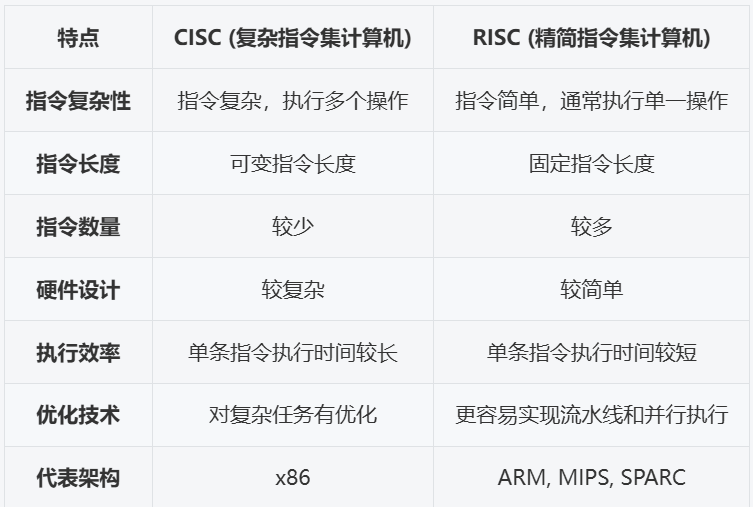
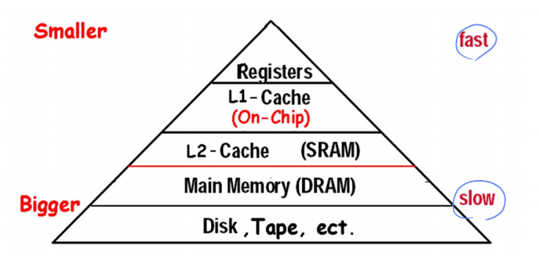

Fundamentals of Computer Design¶
对应教材Ch1
 涉及到软硬件协同的部分
涉及到软硬件协同的部分
Introduction¶
Von Neumann Structure

计算机的分类¶
Classes of Computers - 第一种分类
- Desktop computers
PC: Personal Computers，台式机，笔记本，通用计算 - Servers computers
更强大的处理速度，容量大（用于冗余备份），稳定性比PC高 - Embedded computers 不能随意安装第三方应用的，与系统一体，称为嵌入式（不太符合国情x
- Personal Mobile Devices
如手机，iPad - Supercomputer
Classed by Flynn - 第二种分类，从本质做划分，沿用至今
按照指令流和数据流进行分类

- SISD
单指令流单数据流，如早期的单核 PC - SIMD
一条指令有多条数据流动（如向量数据），方便做流水线 - MISD
多指令流单数据流，并不实际存在 - MIMD
多指令流多数据流，可以做多核
SIMD和MIMD有实际的机器
Performance
- Alogrithm
- Programming language, compiler, architecture
- Processor and memory system
- I/O system (including OS)
Summary
According to the process of using data, computers are developing in three fields:
- speed up processing (parallel)
- speed up transmission (accuracy)
- Increase storage capacity and speed up storage (reliability)
Performance¶
这里有很多因素会影响性能：体系结构，硬件实现，编译器，OS...
对于性能我们有以下几个问题：
- 什么是performance？- 最简单的定义就是执行时间的倒数
- 如何量化分析？- 量化之后才能考虑trade-off
- 如何优化？
We need to be able to define a measure of performance.
- Single users on a PC -> a minimization of response time
- Large data -> a maximization of throughput
为了衡量性能，我们有响应时间和吞吐量两个指标：
- Latency (Response time 响应时间)
一个事件开始到结束的时间 - Throughput (bandwidth 带宽)
给定时间范围内完成了多少的工作量
这部分可见计组笔记
The main goal of architecture improvement is to improve the performance of the system.
Technology Trend¶
The improvement of computer architecture
- Improvement of input / output
- The development of memory organization structure
- Two directions of instruction set development
- CISC / RISC
- 
- CISC 的设计理念更侧重于减少程序的指令数量，单条指令功能复杂，适合某些需要复杂计算的应用。
- RISC 则通过简化指令集，优化硬件设计，使得处理器能够更高效地执行指令，适合需要高频率、高效并行计算的应用。
- Parallel processing technology
不同层次、粒度的并行
Quantitative approaches¶
两个对性能量化研究的方法
CPU Performance Formula¶
- CPU 执行时间 = CPU 时钟周期数 * CPU 时钟周期时间 = CPU 时钟周期数 / CPU 时钟频率
- 减少执行时间：减少周期数/提升时钟频率
- IC：Instruction Count，指令数
- CPI：Cycle Per Instruction，每条指令的时钟周期数
- 由 CPU 硬件决定
- 不同的指令也会有不同的 CPI，平均 CPI 取决于指令的组合方式
- CPI = CPU 时钟周期数 / IC
- CPU 执行时间 = IC * CPI / CPU 时钟频率
- 具体公式可参考CO期中整理
- 多核运算比较难以使用上述公式衡量，一般直接使用时间比较
Amdahl's Law¶
Amdahl's Law: the performance improvement to be gained from using some faster mode of execution is limited by the fraction of the time the faster mode can be used.
当提升系统性能时，有多大的收益受限于被提升的部分所占的运行时间比例
\(T_{improved}=\dfrac{T_{affected}}{\text{improvement factor}}+T_{unaffected}\)
Make the common case fast!
也被用来分析可行性
-
加速比
\[ \begin{align*} \text{Speedup} & =\dfrac{\text{Performance for entire task}_\text{using Enhancement}}{\text{Performance for entire task}_\text{without Enhancement}}\\ & = \dfrac{\text{Total Execution Time}_\text{without Enhancement}}{\text{Total Execution Time}_\text{using Enhancement}} \end{align*} \]加速比 Sp = 改进后的性能 / 改进前的性能 = 改进前的时间 / 改进后的时间
-
执行时间
\(T_{new} = T_{old}\times \left((1-f)+\dfrac{f}{Sp}\right)\)
\(f\) 指改进的部分所占的比例 - \(Sp_{overall} = \dfrac{T_{old}}{T_{new}} = \dfrac{1}{(1-f)+\dfrac{f}{Sp}}\)
- 其中 \(Sp\) 为被优化部分的加速比，\(Sp_\text{overall}\) 为整体加速比（只和被优化部分的比例和局部加速比有关），\(f\) 为被优化部分所占的运行时间比例
Great Architecture Ideas¶
-
Design for Moore's Law - 设计紧跟摩尔定律
- rapid change in computer design \(\to\) design for where it will be
- e.g. 增加了电磁飞机弹射器(这是电力驱动的，而不是目前的蒸汽驱动的模型)，允许由新的反应堆技术提供的电力增加
- 强调做（for where it will be）这件事情本身
-
Use Abstraction to Simplify Design - 采用抽象简化设计
- 低层级的具体实现细节对高层级隐藏
- e.g. 制造自动驾驶汽车，其控制系统部分依赖于已经安装在基础车辆中的现有传感器系统，如车道偏离系统和智能巡航控制系统，开发者不需要考虑所有模块的细节
-
Make the Common Case Fast - 加速大概率事件
- e.g. 高楼内快速电梯
-
Performance via Parallelism - 通过并行提高性能
- e.g. 增加CMOS晶体管的栅极面积（降低电阻）以减少其开关时间
-
Performance via Pipelining - 通过流水线提高性能
-
上一条指令未结束时下一条指令开始做：

-
e.g. 汽车制造中的装配线(assembly lines)
-
-
Performance via Prediction - 通过预测提高性能
- 在知道精确的选择结果前先预测并执行下一步（例如if else语句，射击预判）
- e.g. 包含风力信息的飞机和航海导航系统
- 强调预测对行为的指导，减少等待时间
-
Hierarchy of Memories - 存储器层次
- 存储器分层设计：快、最小和最昂贵的内存位于层次结构的顶部，最慢、最大和最便宜的内存位于底层
- e.g. 图书馆查书台 - 把经常要用的书放最上面
-
Dependability via Redundancy - 通过冗余提高可靠性
- 例如使用备用处理器，若探测到不一样的结果则报ERROR
- e.g. 悬索桥缆索
ISA¶
指令集是人类能看懂的最low level的语言
- Instruction Set Architecture

Instruction Set Design Issues
- Where are operands stored?
registers, memory, stack, accumulator - How many explicit operands are there? (Classification of ISAs)
0, 1, 2, or 3 - How is the operand location specified? (Addressing Modes)
register, immediate, indirect, ... - What type & size of operands are supported? (Data Representation)
byte, int, float, double, string, vector, ... - What operations are supported? (Types of Instructions)
add, sub, mul, move, compare, ...
Basic Principles
- Compatibility
- Versatility
- High efficiency
- Security
ISA Classification Basis¶
这里主要指的是从哪里取数，存到哪里以及计算的规则。
- stack
- First operand removed from second op replaced by the result.
- accumulator
- One implicit operand: the accumulator; one explicit operand: mem location
- Accumulator is both an implicit input operand and a result
- register
- Register-memory architecture
任何指令都可以访存 - Load-store architecture
只有 load/store 的时候才能访存，其他时候都是基于寄存器操作
- Register-memory architecture
GPR Classification¶


A+B

More: try to do with \(D=A*B-(A+C*B)\)
GPR 速度快，但是 GPR 太多也会有资源的浪费和性能下降（如寻找对应的寄存器）